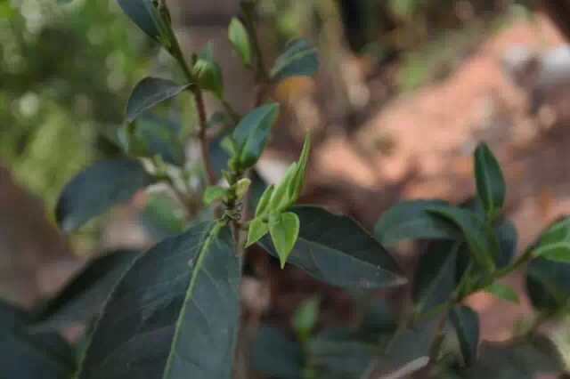
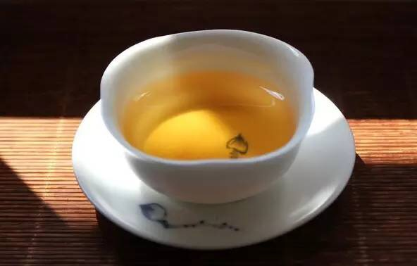

交易中心
交易中心
 交易指南
交易指南
 普洱档案
普洱档案
 普洱资讯
普洱资讯
 下载中心
下载中心
 活动频道
活动频道

品天外之韵,追那卡之香
2016-01-05 11:28 来源：蒙顶山普洱
【摘要】那卡是拉祜族译音，也写作娜卡、腊卡、纳卡，普洱茶产区的山头名称，那卡古树茶即是讲的此山头在自然环境中生长的百年以上茶树所产的普洱茶。“红酒论酒庄，普洱讲山头”云南普洱茶由于的地理环境的不同所产茶业的口感滋味也不同，从历史上的茶马古道开始便以山头的名称来界定特定口感的普洱茶。那卡即西双版纳州勐海县勐宋茶区内大曼吕村委会的一个拉祜族寨子所产的云南普洱茶。其特点条索紧结黑亮，汤色金黄明亮，叶底黄绿匀齐，山野气较强，杯底留香较好，苦涩较显，苦又更突出，汤中带甜，回甘较快较好，汤较饱满，茶香纯正。

那卡古茶园分布
那卡古树茶是勐宋茶区最具代表性的茶，是勐海县勐宋乡大曼吕村委会的一个拉祜族寨子。位于滑竹梁子山的东面，那卡的面积9.69平方公里，海拔1,662.00米，年平均气温 16.00 ℃，年降水量1,800.00毫米，生态环境好，适宜种植茶叶等农作物。全寨一共有107户，568人，农民人均纯收入2919元（2010年12月25日）。那卡寨子以出产品质上好的古树茶而被人们所认识。全寨有600多亩成片古树茶园，其茶树龄在300-500年之间。
那卡古茶园主要分布在村后山坡上，森林环境虽有所破坏但还算比较好，古茶树面积有300多亩，茶树密度较大，呈乔木状生长，树高多超过2米，干径十多厘米。
古茶园中大叶小叶种混生，小叶种占有一定比例。土壤主要是黄沙土。勐宋茶区由于茶比较有名，100多年前就有汉人迁入经商，经营茶叶生意和种茶制茶。

品味介绍
那卡大树野放茶,采用明前春茶箐为原料，晒青工艺制作，叶底肥厚，色泽墨绿，呈粘性。汤色黄亮，香气纯正，水性柔滑，口腔有清凉气息，甜度高而回甘，舌面与上鄂前段有微涩，有收敛性。
那卡茶历来都是是云南有名茶之一。熟悉勐海茶的人都知道一个茶名“那卡茶”。那卡茶在勐海的名气至今还能与“南糯山”“班章茶”比肩，那卡拉祜人做的竹筒茶，在清代就闻名遐迩，每年都要上贡“车里宣慰府”。据历史记载缅甸国王也指定“那卡竹筒茶”为贡茶。“那卡茶”的特点：汤色透亮、口感醇厚、回甘快而生津、韵味悠长、茶底香味独特！！！
那卡大树茶，比不上易武的香气，班章的茶气；却没有布朗山的苦、格朗河的涩。确有他独特的回甘持久、入口润甜，适合大众口味！第一次喝到那卡茶，汤醇厚、滑、润喉；回甘快、持久；香气高；汤色透、亮。边喝茶边领悟“苦尽甘来”的意义生活也就如此。
熟悉那卡的人都知道，那卡茶是普洱茶中的贵族，因茶质上好，产量极低而为大家热情追捧，以至一茶难求，大多数人只能在心里留存一个想望罢了。所以，那卡茶的价格历来很高。
位于勐海县勐宋乡境内的勐宋古茶山，可以说是勐海县最老的古茶区之一，东与景洪相接，南连格朗和乡，并与南糯古茶山隔河相望。在清代，勐宋茶山与南糯山同属车里宣慰司直接管辖，民国时期改归车里县。根据对历史及一些古茶园的分析，比如勐宋保塘村留下的几十亩古茶树，勐宋茶山的种茶历史比诸悠久的南糯山并不会短。
那卡（亦称纳卡，或腊卡）是一个拉祜族寨，海拔1700米左右，属山区，位于勐宋乡与勐往乡交界处，地处勐宋乡西北边，是曼吕（也称大曼吕）村行政管辖之下的一个自然村，离大曼吕盆地5公里左右。早在清代，那卡茶就闻名遐迩，每年都要上贡“车里宣尉府”，据历史记载，那卡所产的竹筒茶甚至被缅甸国王指定为贡茶，可见其茶之佳与名气之重。
熟悉那卡的人都知道，那卡茶是普洱茶中的贵族，因茶质上好，产量极低而为大家热情追捧，以至一茶难求，大都数人只能在心里留存一个想望罢了。所以，那卡茶的价格历来很高。
那卡茶属精致涵养型茶品，其干茶条索纤细精致，色泽典雅沉厚，但是内质丰富，滋味醇厚柔顺，香气馥郁清扬，回甘迅速，喉韵怡爽，满口生津，唇齿留香，回味无穷。精致，多了几份淡泊宁静的闲适。

- 【勐库茶区】勐库西半山中著名的几个茶区2016-01-13
- 关于普洱茶的“四喜四怕”2016-01-13
- 有一种普洱,昔归相识少！2016-01-05
- 有一种圣诞节的浪漫，叫陪我喝杯茶2015-12-24
- 勐库十八寨 —大雪山2015-12-24